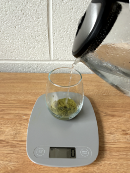
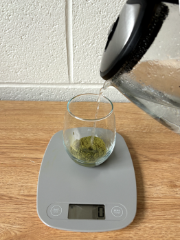
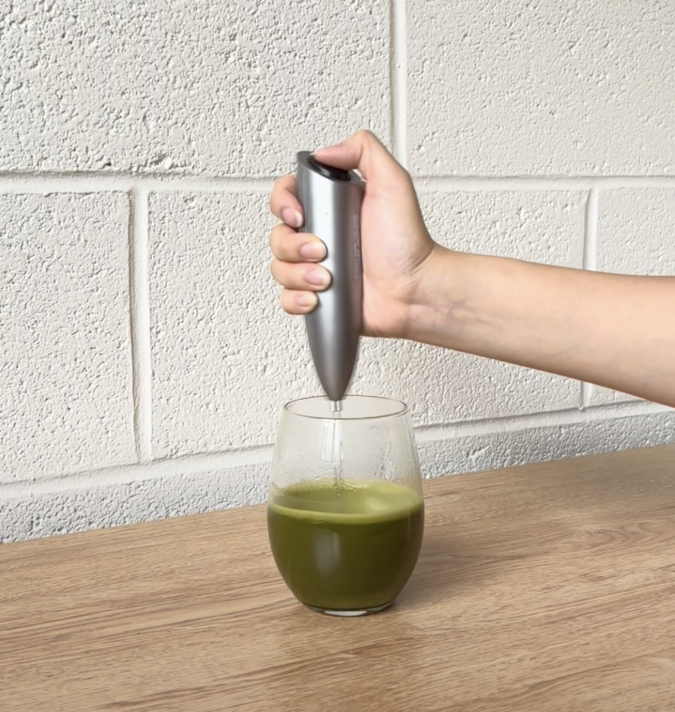
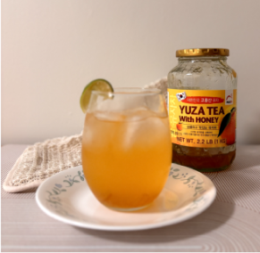

Materials used
- Electric kettle
- Electric whisk
- Spoon
- Scale (optional)

If you don’t have a temperature-specific tea kettle, boil the water and let it cool for 3 minutes to reach the perfect temperature. You want to avoid using water that is too hot to avoid scorching the matcha which will give your drink a bitter flavor.
I used 5 grams of matcha (which is a heaping spoonful), but you can use more or less depending on how strong you want the matcha to taste.

 

Mix it until the matcha has dissolved and is frothy.
I choose to use honey in mine! From this step on, I just eyeball the ingredients. Mix it in well before you move on to the next step.
Feel free to wait for the matcha to cool a bit before this step if you don’t want the ice to melt right away! Putting it in the fridge or freezer for 15 minutes helps, but if you’re impatient like me feel free to skip that or add less water in step 2 so your matcha is less watery. (Ice cubes courtesy of my roommate)


I like adding a bit of vanilla syrup to counteract the bitterness of the matcha, but feel free to skip this step and just opt for sweetener! At this stage, also add in your milk of choice. I am using whole milk, but you could use oat, almond, or soy milk. Once again, I am just eyeballing these ingredients.


Enjoy your homemade matcha latte!


Check Out my Other Recipes!
Yuzu Lemon Bomb
7 minutes
Materials used
Ingredients
Steps
Leave a rating!
Name
Email address (this will not be displayed to others)
Comment
Enjoy the recipe? Have questions?
Leave a comment!